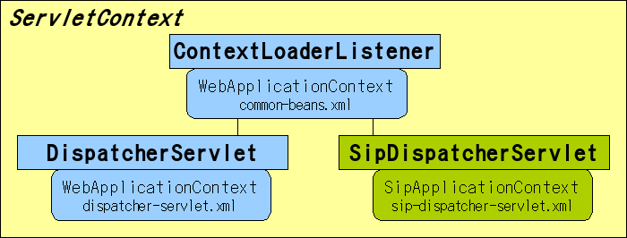

sf-api
Requirement
This document requires the following knowledge.
- JavaEE 5 or higher
- SIP Servlet API 1.1
- SpringFramework (2.5.x)
- Maven2 (2.1.x)
Settings
We prepare the archetype of Maven2.
This archetype requires to access to the basic repository of Maven2.
Please add the following repository to your $HOME/.m2/settings.xml.
<repositories>
<repository>
<id>jboss-public-repository-group</id>
<name>JBoss Public Maven Repository Group</name>
<url>https://repository.jboss.org/nexus/content/groups/public/</url>
<layout>default</layout>
<releases>
<enabled>true</enabled>
<updatePolicy>never</updatePolicy>
</releases>
<snapshots>
<enabled>true</enabled>
<updatePolicy>never</updatePolicy>
</snapshots>
</repository>
<repository>
<id>JbossRepository</id>
<name>Jboss Repository</name>
<url>http://repository.jboss.org/maven2</url>
<snapshots>
<enabled>true</enabled>
</snapshots>
<releases>
<enabled>true</enabled>
</releases>
</repository>
<repository>
<id>backup.repository.jboss.org</id>
<name>JBoss Repository Backup</name>
<url>http://anonsvn.jboss.org/repos/repository.jboss.org/maven2/</url>
<snapshots>
<enabled>true</enabled>
</snapshots>
<releases>
<enabled>true</enabled>
</releases>
</repository>
<repository>
<id>jboss-snapshots</id>
<name>JBoss Snapshot Repository</name>
<url>http://snapshots.jboss.org/maven2</url>
<releases>
<enabled>false</enabled>
</releases>
<snapshots>
<enabled>true</enabled>
</snapshots>
</repository>
</repositories>
sf-core-archetype
Create the project of using SSF.
$ mvn archetype:create -DarchetypeGroupId=org.mobicents.ssf -DarchetypeArtifactId=sf-core-archetype \
-DarchetypeVersion=1.0.0-SNAPSHOT -DgroupId=<your groupId> -DartifactId=<your artifactId>
Created directories and files are below.
.
|-- pom.xml
`-- src
|-- main
| |-- java
| | `-- com
| | `-- oki
| | `-- test
| | `-- App.java
| |-- resources
| `-- webapp
| `-- WEB-INF
| |-- common-beans.xml
| |-- dispatcher-servlet.xml
| |-- sip-dispatcher-servlet.xml
| |-- sip.xml
| `-- web.xml
`-- test
`-- java
`-- com
`-- oki
`-- test
`-- AppTest.java
14 directories, 8 files
- web.xml
Settings of Spring MVC, and defines the Servlet that calls to SIP Application.
- sip.xml
In this file, Basic configurations for SSF. Register the SipDispatcherServlet that send and receive the SIP events.
- dispatcher-servlet.xml
Spring beans configuration file for DispatcherServlet that defines in web.xml
- sip-dispatcher-annotation-servlet.xml
Spring bean configuration file for SipDispatcherServlet that defines in sip.xml. In this file, defines to notify the SIP events to annotated beans.
- common-beans.xml
Spring bean configuration file for both of WEB/SIP. In web.xml, Defined by ContextLoaderListener in web.xml.
- App.java, AppTest.java
These files are that create the folders for java packages.
Constructions of ServletContext and ApplicationContext are below.
Create the Proxy and Registrar from this configuration.